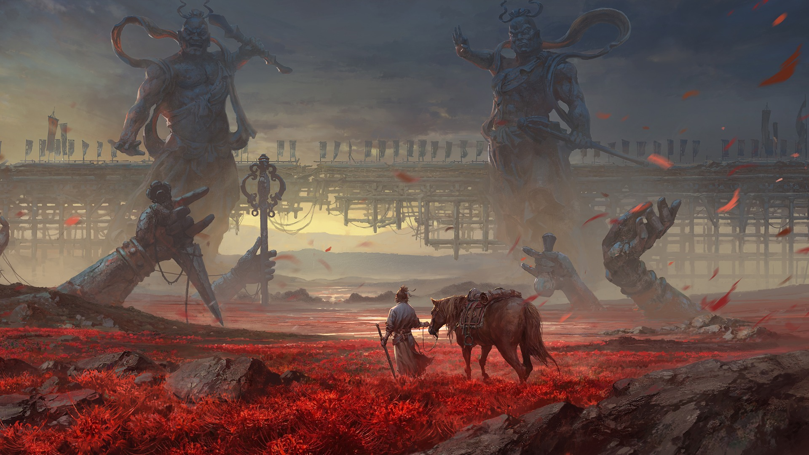

Rutgers University–New Brunswick
Computer Science & Data Science
School of Arts and Sciences
Expected graduation: May 2030
Current coursework: Intro to Computer Science, Data 101, Calculus II, and General Psychology.
Member of USACS.
I build software
for creative work.
Known online as Nitro.
Curious about what’s under the surface.
Creative software, image processing,
and tools for the work in between.
Your hands are
the interface.
Turn a gesture into a brushstroke. A creative workspace that brings hand tracking, drawing, and photo editing into one interface.
Calibrated hand tracking, editable drawings, and project save/load.
React / TypeScript / MediaPipe
Calibrated pinch thresholds and smoothed two-hand cursors support tool pickup and drawing. The workspace includes undo/redo, PNG export, and JSON project save/load.
Gemini interprets sketches into editable diagram previews; ElevenLabs transcription supports a limited set of voice commands. Built independently for HackRU Fall 2026.

Slide to compare the original with the mosaic. Zoom in to see the individual tiles.
PhotoMosaic rebuilds a target image from smaller photographs. From a distance, the scene holds together. Up close, the individual tiles emerge.
LAB color matching with a reuse penalty keeps tile selection varied.
Python / OpenCV / NumPy
A modular pipeline crops source images into square tiles, compares average colors in LAB color space, adjusts the selected tiles toward the target, and assembles a PNG output.
Smart Collection Manager brings order to Blender scenes. Sort objects by type, rename in batches, and keep track of what’s in your scene.
Sort by object type, batch rename, and inspect scene statistics in one sidebar.
Python / Blender API
A dedicated sidebar exposes mesh, light, and camera statistics alongside sorting, renaming, and empty-collection visibility controls. A small tool for the repetitive parts of a creative workflow.
Photography. 3D modeling. Blender animation.
I like understanding how things come together.
A study in focus.
Scroll to look insidePhotography, 3D printing, and modeling are other ways I explore the relationship between a whole and its parts.
I’m Sriakshay. Most people online know me as Nitro. I’m studying Computer Science and Data Science at Rutgers, and I enjoy building software that connects technical ideas with things people can use.
Teaching has shaped how I work, too—from coaching tennis to helping younger students write their first programs.
Request resumeComputer Science & Data Science
School of Arts and Sciences
Expected graduation: May 2030
Current coursework: Intro to Computer Science, Data 101, Calculus II, and General Psychology.
Member of USACS.
Princeton Tennis Program
Coached students across ages and skill levels, including individualized instruction for children with autism.
Brooks Crossing Middle School
Taught Scratch through hands-on projects, helping students practice logical thinking and problem solving.
Python · Java · TypeScript · JavaScript · C++ · React · OpenCV · NumPy · Blender API · Git
Photography, 3D printing & modeling, Blender animation, tennis.
Plus a soft spot for the McLaren P1, Senna, Kimera EVO37, and the SR-71.